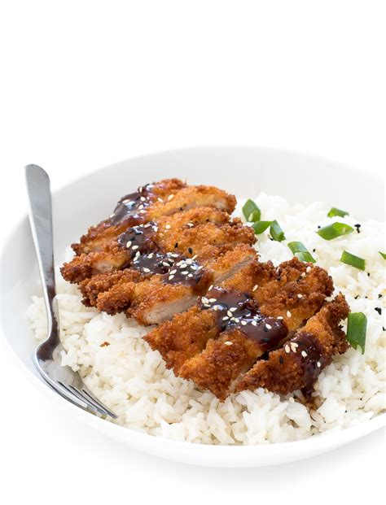

Japanese Style Chicken Katsu

Description
Chicken katsu is Japanese-style fried chicken. This is my family recipe and can also be used to make tonkatsu by using pork cutlets instead of chicken.
Serve with white rice and tonkatsu sauce.
Katsu is a Japanese dish of crispy fried cutlets coated with Panko bread crumbs.
Popular varieties are chicken katsu (like this recipe) and tonkatsu (which is made with pork).
Ingredients
- Chicken: Four chicken breasts, halve boneless
- Seasonings:Salt and pepper
- Flour:All purpose flour
- Egg: 2 eggs
- Panko: Panko bread crumbs
- Oil: canola or vegetable oil; Must have high smoke point.
Directions
- Season Chicken, then dredge with flour
- Coat each breats in egg, then press into panko.
- Fry Chicken Katsu until golden brown.